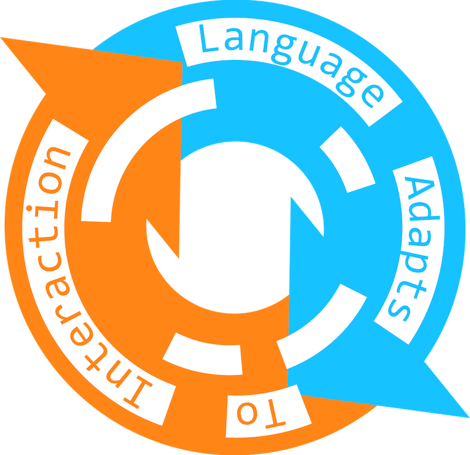

Table of Contents
Indications and Grammar: Eyes and Outstretched fingers in a first generation emerging sign language
John b. Haviland
Improvisation, Interaction and Iteration in the Evolution of Linguistic Structure
Marieke Schouwstra, Yasmin Motamedi, Kenny Smith, Simon Kirby
Conventional Structure from Transformative Actions on Prior Gestures in an Emergent System
Ashley Micklos
Adaptors and the Turn-Taking Mechanism
Przemysław Żywiczyński, Sylwester Orzechowski & Sławomir Wacewicz
Repetitive Mutual Hypothesizing Induces Change of Symbol Systems in Graphical Communication
Kaori Tamura & Takashi Hashimoto
Interaction Alone Cannot Support the Emergence of a Spatial Agreement System in a Paired Interaction Context
Emily Carrigan & Marie Coppola
Communication Without Prior Learning Inhibits the Emergence of Systematic Structure
Catriona Silvey, Molly Flaherty, Susan Goldin-Meadow, Simon Kirby, Kenny Smith
Exploring the Role of Interaction in the Emergence of Linguistic Structure
Vinicius Macuch Silva, Seán Roberts
Adaptors and the Turn-Taking Mechanism
Przemysław Żywiczyński, Sylwester Orzechowski & Sławomir Wacewicz
Abstract:
Ekman & Friesen’s (1969) classification of nonverbal behaviours, by far the most influential in psychological literature, singles out regulators as a separate class of movements dedicated to the structuring of conversational interaction. By contrast, the category of adaptors (e.g. scratching yourself, foot-shaking or fiddling with a pen) is generally considered to subsume purely self-regulatory behaviours, largely devoid of an interactive function. Our study suggests that this long-held assumption is inaccurate and that adaptors may serve a conversation-related function, with possible consequences to evolutionary concerns about the emergence of proto-conversational interaction.
Citation:
Żywiczyński P., Orzechowski S. & Wacewicz, S. (2016) Adaptors and the Turn-Taking Mechanism. In S. Roberts & G. Mills (Eds.) Proceedings of EvoLang XI, Language Adapts to Interaction Workshop, 21 March, 2016. Available online: http://evolang.org/neworleans/workshops/papers/LATI_4.html
